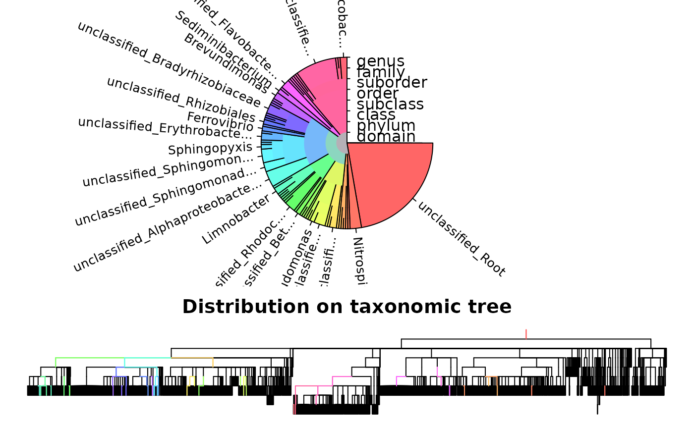

IdTaxa.RdClassifies sequences according to a training set by assigning a confidence to taxonomic labels for each taxonomic level.
IdTaxa(test,
trainingSet,
type = "extended",
strand = "both",
threshold = 60,
bootstraps = 100,
samples = L^0.47,
minDescend = 0.98,
fullLength = 0,
processors = 1,
verbose = TRUE)An AAStringSet, DNAStringSet, or RNAStringSet of unaligned sequences.
An object of class Taxa and subclass Train.
Character string indicating the type of output desired. This should be (an abbreviation of) one of "extended" or "collapsed". (See value section below.)
Character string indicating the orientation of the test sequences relative to the trainingSet. This should be (an abbreviation of) one of "both", "top", or "bottom". The top strand is defined as the input test sequences being in the same orientation as the trainingSet, and the bottom strand is its reverse complement orientation. The default of "both" will classify using both orientations and choose the result with highest confidence. Choosing the correct strand will make classification over 2-fold faster, assuming that all of the reads are in the same orientation. Note that strand is ignored when test is an AAStringSet.
Numeric specifying the confidence at which to truncate the output taxonomic classifications. Lower values of threshold will classify deeper into the taxonomic tree at the expense of accuracy, and vise-versa for higher values of threshold.
Integer giving the maximum number of bootstrap replicates to perform for each sequence. The number of bootstrap replicates is set automatically such that (on average) 99% of k-mers are sampled in each test sequence.
A function or call written as a function of `L', which will evaluate to a numeric vector the same length as `L'. Typically of the form ``A + B*L^C'', where `A', `B', and `C' are constants.
Numeric giving the minimum fraction of bootstraps required to descend the tree during the initial tree descend phase of the algorithm. Higher values are less likely to descend the tree, causing direct comparison against more sequences in the trainingSet. Lower values may increase classification speed at the expense of accuracy. Suggested values are between 1.0 and 0.9.
Numeric specifying the fold-difference in sequence lengths between sequences in test and trainingSet that is allowable, or 0 (the default) to consider all sequences in trainingSet regardless of length. Can be specified as either a single numeric (> 1), or two numerics specifying the upper and lower fold-difference. If fullLength is between 0 and 1 (exclusive), the fold-difference is inferred from the length variability among sequences belonging to each class based on the foldDifference quantiles. For example, setting fullLength to 0.99 would use the 1st and 99th percentile of intra-group length variability from the trainingSet. In the case of full-length sequences, specifying fullLength can improve both speed and accuracy by using sequence length as a pre-filter to classification. Note that fullLength should only be greater than 0 when both the test and trainingSet consist of full-length sequences.
The number of processors to use, or NULL to automatically detect and use all available processors.
Logical indicating whether to display progress.
Sequences in test are each assigned a taxonomic classification based on the trainingSet created with LearnTaxa. Each taxonomic level is given a confidence between 0% and 100%, and the taxonomy is truncated where confidence drops below threshold. If the taxonomic classification was truncated, the last group is labeled with ``unclassified_'' followed by the final taxon's name. Note that the reported confidence is not a p-value but does directly relate to a given classification's probability of being wrong. The default threshold of 60% is intended to minimize the rate of incorrect classifications. Lower values of threshold (e.g., 50%) may be preferred to increase the taxonomic depth of classifications. Values of 60% or 50% are recommended for nucleotide sequences and 50% or 40% for amino acid sequences.
If type is "extended" (the default) then an object of class Taxa and subclass Train is returned. This is stored as a list with elements corresponding to their respective sequence in test. Each list element contains components:
A character vector containing the taxa to which the sequence was assigned.
A numeric vector giving the corresponding percent confidence for each taxon.
If the classifier was trained with a set of ranks, a character vector containing the rank name of each taxon.
If type is "collapsed" then a character vector is returned with the taxonomic assignment for each sequence. This takes the repeating form ``Taxon name [rank, confidence%]; ...'' if ranks were supplied during training, or ``Taxon name [confidence%]; ...'' otherwise.
Murali, A., et al. (2018). IDTAXA: a novel approach for accurate taxonomic classification of microbiome sequences. Microbiome, 6, 140. https://doi.org/10.1186/s40168-018-0521-5
Cooley, N. and Wright, E. (2021). Accurate annotation of protein coding sequences with IDTAXA. NAR Genomics and Bioinformatics, 3(3). https://doi.org/10.1093/nargab/lqab080
data("TrainingSet_16S")
# import test sequences
fas <- system.file("extdata", "Bacteria_175seqs.fas", package="DECIPHER")
dna <- readDNAStringSet(fas)
# remove any gaps in the sequences
dna <- RemoveGaps(dna)
# classify the test sequences
ids <- IdTaxa(dna, TrainingSet_16S, strand="top")
#> ================================================================================
#>
#> Time difference of 7.55 secs
#>
ids
#> A test set of class 'Taxa' with length 175
#> confidence name taxon
#> [1] 75% uncultured bacter... Root; Bacteria; Firmicutes; Bacilli; Ba...
#> [2] 68% uncultured bacter... Root; Bacteria; Firmicutes; Bacilli; Ba...
#> [3] 65% uncultured bacter... Root; Bacteria; Firmicutes; Bacilli; Ba...
#> [4] 92% uncultured bacter... Root; Bacteria; Firmicutes; Bacilli; La...
#> [5] 61% uncultured bacter... Root; Bacteria; Firmicutes; Clostridia;...
#> ... ... ... ...
#> [171] 38% uncultured bacter... Root; unclassified_Root
#> [172] 48% uncultured bacter... Root; unclassified_Root
#> [173] 31% uncultured bacter... Root; unclassified_Root
#> [174] 50% uncultured bacter... Root; unclassified_Root
#> [175] 54% uncultured bacter... Root; unclassified_Root
# view the results
plot(ids, TrainingSet_16S)
